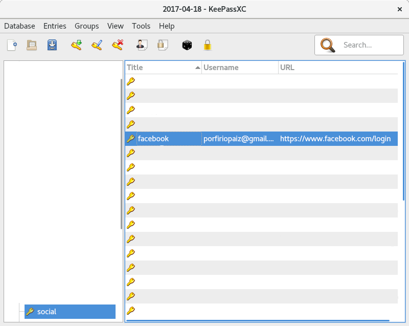

KeePassXC is one of the first programs that I install after the first boot of any fresh install.
In the next post I will show how to install KeePassXC on Fedora and Debian, its use and how it makes easier the management of hundreds of accounts and the associated passwords, and how to generate secure passwords with the highest levels of entropy.
Installation
Fedora
su -c 'dnf install keepassxc'
Debian
su -c 'apt-get install keepassx'
Create a password database
The first thing we must do is create our first database in which we will keep all the passwords that we generate for each account.
- Execute KeePassXC:
- Create a new database:

- Assign a name to the *.kdbx file, our database:

- It is time to assign a password, this will be the master password that We will use to decrypt the file Passwords.kdbx, we click on OK:
- To add a new account and its respective password, click on the icon of the Key with a green arrow:
- Add a title to identify what this password corresponds to, add the username to which the password We are going to create will belong:

Then click on the black dots icon, notice how a new menu with options is displayed:
Click on the password tab, increase the amount of characters desired for our password, the more characters the higher the entropy level.
In the Characters Types section, We can select the different groups of characters We want to be present in our password:
- Characters from A to Z, in capital letters: A-Z
- Characters from a to z, in lower case: a-z
- Numbers: 0-9
- Special characters: /*_ ...
- Characters from Extended ASCII
I marked them all.
With the mouse scroll go down and mark with a check:
- Exclude look alike characters
- Pick characters from every group
Finally click Generate to generate the password with the combination of selected characters and then Copy to copy the password to the clipboard.
- Now pressing Ctrl-v paste the password in the Password field and Ctrl-V in Repeat:
- By clicking on the eye icon we can reveal the password we have generated, copied and pasted in the Password and Repeat fields, click Apply and then OK:

- Note the asterisk in the upper border of the window at the end of Passwords.kdbx, this means that the changes have not been saved in the database:
- Click on the icon of the blue file to save the changes in the database:
- Note that the asterisk at the top edge of the screen at the end of Passwords.kdbx has disappeared, this means that the changes have already been saved in the database:
Useful keyboard shortcuts
Ctrl - b Copy the user to the clipboard.
Ctrl - c Copy the user's password to the clipboard.
Ctrl - e Open the menu to make modifications to the different accounts that we have in our database.
Ctrl - n Allows you to add a new account to the database.
Self-writing shortcut
This keyboard shortcut is my favorite. It allows you to write the user and password of an entry in our database directly to the page where that user and password is used, so it is not necessary to use three shortcuts to achieve the same result.
Ctrl - v
In order for it to work as it should, both KeePassXC and the field where the user and password are introduced, must be a shot away from Alt - Tab.
By this I mean that if you press Alt - Tab you should move from the KeePassXC window to the browser window, for example:
Note that the account has a URL linked:

Go to our KeePassXC, we select the entry of our database that corresponds to the account in which we want to log in.
Press:
Ctrl - u to open the tab in which you will log in, this will open the browser that we have configured as our default Web Browser, this page is configured to locate the keyboard entry in the user field.

Press:
Atl - Tab to select the KeePassXC window back:
And then, making sure We still have selected the same entry in the database, press:
Ctrl - v

The final result should make KeePassXC return to the browser, insert the user, jump to the next field, insert the password, to finally and automatically "press" Log In and log in.
I hope this post is useful for you.